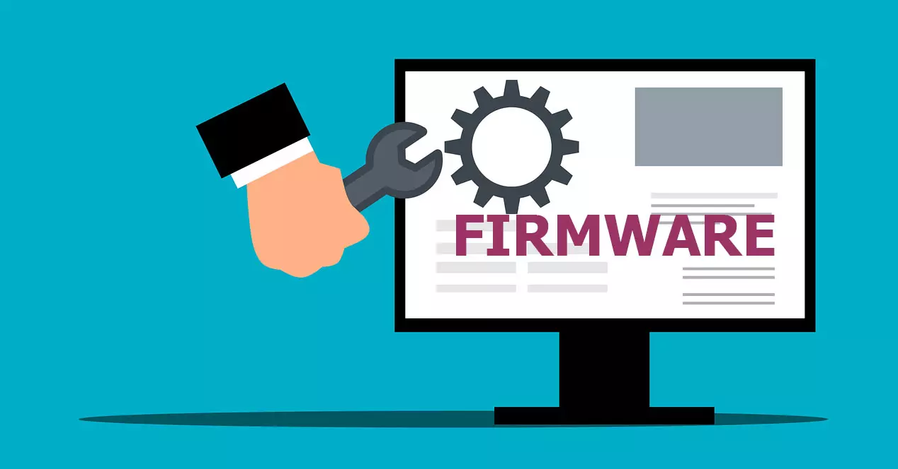
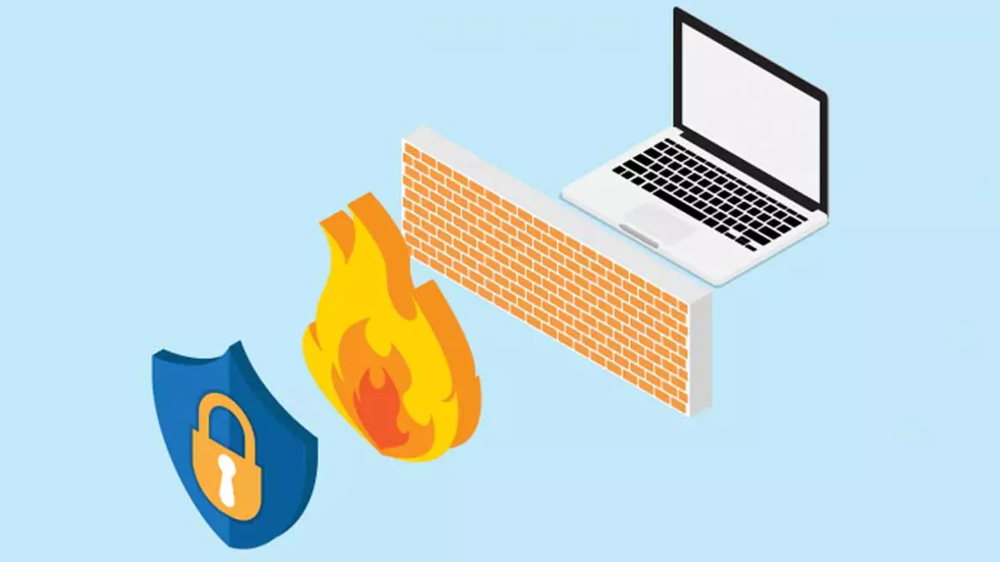
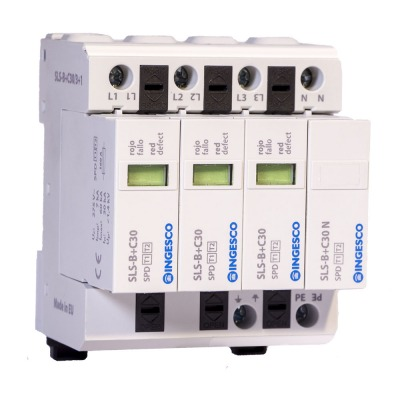
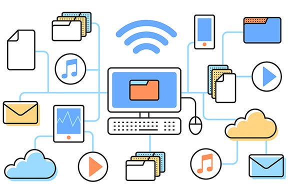
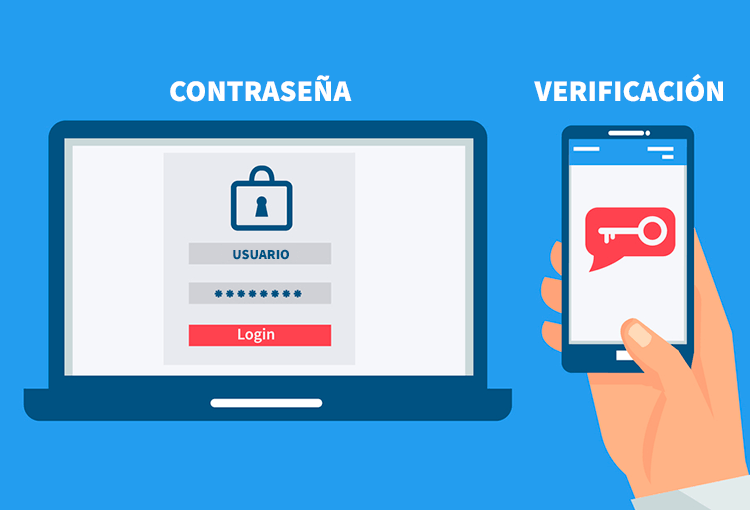

Conceptos y recomendaciones de seguridad para el buen
funcionamiento de los equipos de cómputo
Para garantizar el buen funcionamiento de los equipos de cómputo, es importante tener en cuenta tanto la seguridad hardware como la seguridad software. Aquí tienes algunos conceptos y recomendaciones en ambos aspectos:
Seguridad Hardware:
Contraseñas seguras: Establece contraseñas fuertes y únicas para acceder a tus dispositivos.
Utiliza combinaciones de letras, números y caracteres especiales, y evita usar información personal
predecible.
Actualizaciones del firmware: Mantén el firmware del hardware actualizado con las últimas versiones
proporcionadas por el fabricante. Estas actualizaciones suelen incluir correcciones de seguridad importantes.

Cortafuegos (firewall): Configura y activa un firewall en tu red y en los dispositivos para controlar el
tráfico de red entrante y saliente, y protegerlos de posibles amenazas externas.

Protección contra sobretensiones: Utiliza reguladores de voltaje o protectores contra sobretensiones para
evitar daños en los equipos debido a picos de electricidad.

Respaldo de datos: Realiza copias de seguridad regularmente en dispositivos externos o en la nube para
proteger tus datos en caso de fallos de hardware o ataques cibernéticos.

Seguridad Software:
Actualizaciones del sistema operativo y aplicaciones: Mantén tu sistema operativo y todas las aplicaciones
actualizadas con las últimas versiones, ya que estas actualizaciones suelen incluir parches de seguridad
importantes.
Antivirus y antimalware: Instala un software antivirus y antimalware confiable y actualízalo regularmente.
Realiza escaneos periódicos para detectar y eliminar posibles amenazas.
Software de cortafuegos: Utiliza un software de cortafuegos para complementar la protección proporcionada por
el firewall de hardware. Configúralo adecuadamente para bloquear el acceso no autorizado a tu sistema.
Descargas y archivos adjuntos seguros: Ten cuidado al descargar archivos o abrir archivos adjuntos en correos
electrónicos. Verifica la fuente y utiliza herramientas de detección de malware para evitar descargar archivos
infectados.
Autenticación de dos factores (2FA): Habilita la autenticación de dos factores siempre que sea posible.
Esto añade una capa adicional de seguridad al requerir un segundo método de verificación, como un código
enviado a tu teléfono, además de la contraseña.

Conciencia de seguridad: Educa a los usuarios sobre las mejores prácticas de seguridad, como no hacer clic
en enlaces sospechosos, no abrir correos electrónicos no solicitados y no compartir información confidencial
sin verificar la fuente.
Estas recomendaciones de seguridad tanto a nivel hardware como software ayudarán a mantener tus equipos
de cómputo protegidos y funcionando correctamente. Recuerda que la seguridad es un proceso continuo y es
importante mantenerse actualizado sobre las últimas amenazas y medidas de protección.